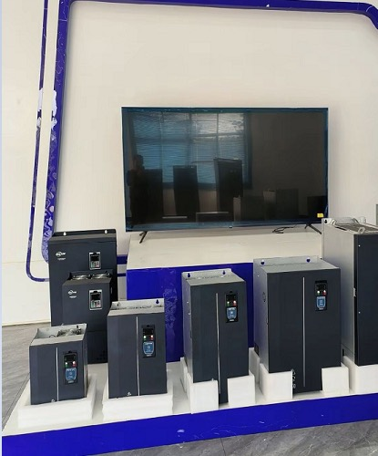
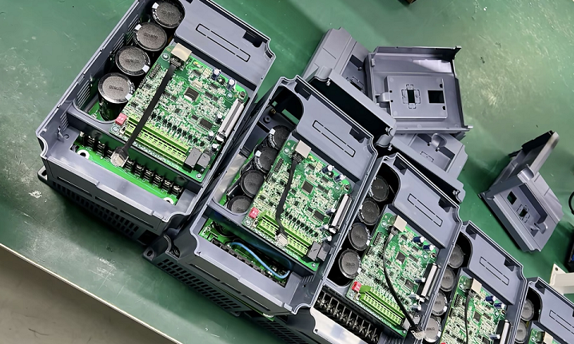

Company News

No Shutdown at High Temperature | Dazhong Core Solution for Variable Frequency Drive Heat Dissipation
In continuous production scenarios such as metallurgy, chemical industry, mining, fans and water pumps, high-temperature shutdown of variable frequency drives (VFDs) is a major challenge plaguing numerous enterprises. As a high-quality Chinese supplier and professional manufacturer deeply engaged in the industrial control field, Dazhong Electric Motor Tech adheres to high-quality R&D and manufacturing standards to create long-acting heat-dissipating variable frequency drives. These drives can still operate stably and continuously in extreme high-temperature environments, balancing energy efficiency and production safety. Relying on customized production, full-chain services and global partnership, we provide reliable variable frequency control solutions for industrial customers around the world.

I. High-Temperature Shutdown of VFDs: A Common Challenge in Industrial Sites
1.1 Common Trigger Scenarios of High-Temperature Shutdown
The industrial site environment is complex, and high-temperature shutdown is not an isolated case, especially frequent in the following scenarios: high temperature in workshops in summer without effective cooling, equipment installed in closed spaces with poor ventilation, long-term full-load or even overload operation of VFDs, and blocked heat dissipation air ducts in high-dust environments. In these scenarios, the heat dissipation system of conventional VFDs is difficult to cope, leading to a rapid rise in temperature and eventually triggering the protection mechanism.
1.2 Core Hazards of High-Temperature Shutdown
The losses caused by high-temperature shutdown of VFDs are far beyond the equipment itself: first, it directly leads to the interruption of the production line, resulting in considerable loss of production efficiency; second, long-term high temperature accelerates the aging of core components such as capacitors and IGBT modules, shortens the service life of the equipment, and increases replacement costs; third, excessive temperature rise will reduce the control accuracy of the VFD, leading to abnormal increase in energy consumption; fourth, frequent shutdowns require increased maintenance frequency, resulting in a significant rise in labor costs. Many conventional VFDs can only cope with normal temperature environments. Once the ambient temperature exceeds 40℃, the heat dissipation capacity drops sharply, and the risk of shutdown doubles.
II. Dazhong VFD Heat Dissipation Technology: Eliminating High-Temperature Shutdown from the Root
2.1 Customized Heat Dissipation Structure Design to Enhance Heat Discharge
Dazhong variable frequency drive adopts a customized long-acting heat dissipation structure to solve the high-temperature problem from the design source. The equipment is equipped with a vertical forced convection air duct, combined with a large-area composite heat sink to increase the heat contact area, so that the heat discharge speed is increased by more than 35%; at the same time, it is equipped with a PWM intelligent temperature-controlled speed-regulating fan, which can automatically adjust the speed according to the real-time temperature of the equipment. It not only ensures the heat dissipation efficiency under high-temperature working conditions, but also reduces noise and energy consumption at normal temperature, balancing practicality and economy.
2.2 Intelligent Temperature Control System for Early Warning and Shutdown Prevention
The internal part adopts multi-point real-time temperature monitoring technology to accurately measure the temperature of core components such as IGBT modules, rectifier units and capacitor banks, and feed back temperature data in real time. Once the temperature is close to the safety threshold, the system will not shut down passively, but immediately intelligently adjust the output power and issue a high-temperature warning, reserving sufficient processing time for the staff and eliminating the hidden danger of high-temperature shutdown from the root.
2.3 Internal Structure Optimization to Avoid Heat Accumulation
The internal air flow guidance design of the equipment is optimized, and the layout of components is reasonably planned to avoid local heat accumulation and ensure uniform temperature of the whole machine. Even when operating continuously at full load in an environment above 50℃, it can keep the temperature of core components stable within the safe range, adapting to various high-temperature industrial scenarios.
III. High-Quality Manufacturing: Strength Guarantee of Professional Chinese VFD Manufacturers
3.1 Strict Quality Control System to Build a Solid Quality Line of Defense
As a reliable Chinese supplier and senior manufacturer, Dazhong has always adhered to high-quality production standards. Each VFD must go through multiple rigorous processes such as high-low temperature cycle testing, full-load aging testing and dust-proof and moisture-proof testing before leaving the factory, ensuring that the equipment can adapt to harsh industrial environments and preventing unqualified products from entering the market.
3.2 Selection of High-Quality Components to Improve High-Temperature Resistance
Core components are selected from international first-line brand wide-temperature grade accessories, with a working temperature range of -20℃~70℃, which can easily cope with extreme working conditions such as high temperature and low temperature; at the same time, the components are treated with three-proof coating, which has excellent dust-proof, moisture-proof and anti-corrosion capabilities, and can still operate stably in high-dust and high-humidity industrial scenarios.
3.3 Modular Structure Design for Convenient Maintenance and Cost Reduction
The modular structure design not only optimizes the internal heat dissipation space, but also makes later maintenance convenient and efficient. When the equipment breaks down, the corresponding module can be quickly replaced, which greatly shortens the fault shutdown time and reduces the enterprise's maintenance cost.
IV. High Energy Efficiency: Dual Compliance with Heat Dissipation Stability and Energy Efficiency
4.1 Optimized Control Algorithm to Reduce Invalid Energy Consumption
Energy efficiency is one of the core advantages of Dazhong VFDs. The equipment is equipped with an optimized vector control algorithm, which can dynamically match the load demand, reduce invalid power consumption and equipment heat generation, and achieve lower energy consumption while ensuring heat dissipation stability, complying with domestic and foreign first-class energy efficiency standards.
4.2 Adaptation to Multiple Scenarios with Significant Energy-Saving Effects
For general industrial equipment such as fans, water pumps, compressors and conveyors, the energy-saving effect of Dazhong VFDs can reach 15%~40%, which can not only avoid the impact of high-temperature shutdown on production, but also help enterprises reduce electricity expenses, truly achieving "stable operation without shutdown and more cost-saving in long-term use".
V. Customized Production: Adapting to Various High-Temperature Special Scenarios
5.1 Customization of High-Temperature Special Models to Meet Extreme Needs
Relying on strong customized production capabilities, Dazhong can provide exclusive VFD solutions for customers in different industries. For ultra-high temperature scenarios such as smelting, casting and glass processing, it can customize models that operate without derating above 60℃; for outdoor, open-air and air-conditioning-free computer room environments, it provides special models with high protection and strong heat dissipation, adapting to various special working conditions.
5.2 Full-Dimensional Personalized Customization for Rapid Implementation
In addition to high-temperature adaptation customization, it also supports full-dimensional personalized customization such as voltage, power, communication protocol and installation method, accurately matching parameters according to the actual needs of the customer's site. From scheme design, prototype testing to mass production, we follow up one-on-one throughout the process to ensure the rapid implementation and use of customized products.
VI. Global Cooperation and Full-Process Services: Empowering Customers Worldwide
6.1 Building Global Partnerships to Expand the International Market
With an open attitude, Dazhong builds global partnerships, exports products to many countries and regions around the world, establishes long-term and stable cooperative relations with overseas distributors, system integrators and terminal enterprises, and promotes high-quality Chinese VFDs to the global market.
6.2 Full-Life Cycle Services for All-Round Protection
We provide professional services covering the entire life cycle of the product: pre-sales services include on-site survey, selection guidance and scheme design to help customers choose the right product; in-sales services follow up the production progress to ensure on-time delivery with full transparency and traceability; after-sales services include on-site commissioning, 7×24-hour technical support and regular maintenance training to quickly solve various problems during equipment operation. Both domestic and overseas customers can enjoy the same high-quality service experience.
VII. FAQ Common Questions and Tips for VFD Use at High Temperature
1. What are the most common causes of VFD high-temperature alarms?
Answer: Mainly blocked heat dissipation air ducts, faulty heat dissipation fans, excessively high ambient temperature and unreasonable load matching.
2. What is the maximum ambient temperature that Dazhong VFDs can withstand?
Answer: Standard models can operate stably in a 50℃ environment, and high-temperature customized models support continuous operation without derating at 60℃.
3. How to maintain and improve the heat dissipation effect of VFDs daily?
Answer: Clean the dust in the air duct every month, check the fan operation status every quarter, and keep the installation environment well-ventilated.
4.Do VFDs need to be derated for use in high-temperature environments?
Answer: Dazhong standard models do not need derating within 45℃, and high-temperature customized models do not need derating in the full temperature range.
5.Will a faulty heat dissipation fan directly cause shutdown?
Answer: No, it will not shut down immediately. The system will issue an early warning first, and only start protection when the temperature continues to exceed the limit, reserving processing time.
6.Can high-temperature models for outdoor and open-air use be customized?
Answer: Yes, we can provide outdoor-specific variable frequency drives with high protection level and strong heat dissipation.
7.Will high-temperature operation affect the energy-saving effect of VFDs?
Answer: No, Dazhong's intelligent algorithm can automatically adjust, and energy efficiency remains stable.
8.As a Chinese supplier, how to guarantee the delivery time and after-sales service?
Answer: Regular models are in stock for quick delivery, customized models are delivered on schedule, and the global after-sales network responds quickly to needs.
9.Will long-term high-temperature operation burn out core modules?
Answer: Multiple overheating protection mechanisms can effectively avoid damage to core components such as IGBTs and capacitors due to high temperature.
10.Can an integrated heat dissipation solution for motors and VFDs be provided?
Answer: Yes, Dazhong supports customized production of integrated drive and heat dissipation solutions.